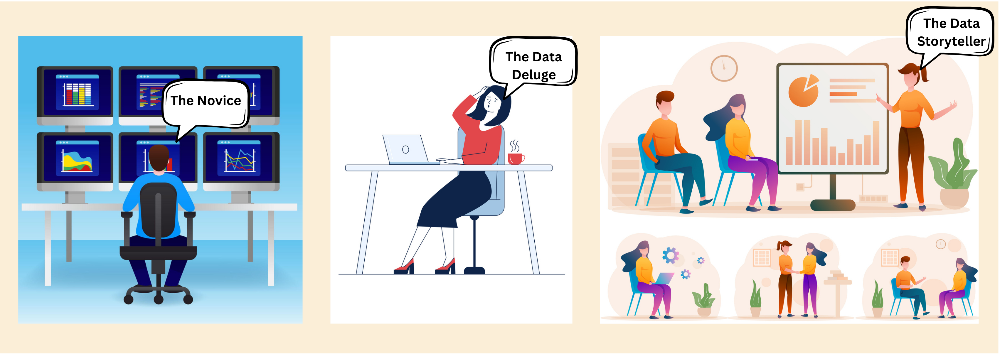
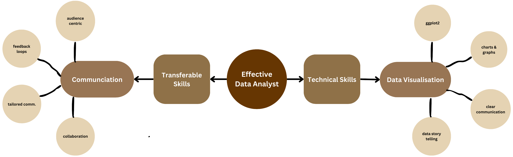
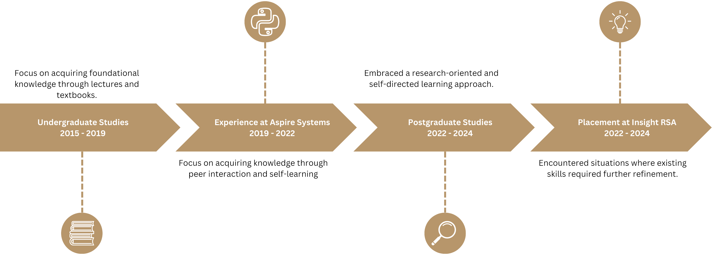

Crititcal Analysis of WIL
This section reflects on my data science internship at Insight Research Services Associated, focused on developing educational materials for workshops.

Describe
Throughout the internship, I actively participated in various tasks. My primary responsibility was developing computer exercises using R and Python. I strived to incorporate real-world datasets relevant to workshop topics, ensuring participants could apply their learnings to practical scenarios. For each exercise, I meticulously crafted corresponding solutions with detailed explanations for participants. This involved not only providing the correct answer but also breaking down the thought process and reasoning behind each step. I aimed to create a learning experience that fostered not just problem-solving skills but also a deeper understanding of the underlying data science concepts.
Interpret
While I believe I consistently delivered high-quality work, some aspects of my approach could have been further optimized. One area for improvement lies in my communication with the InsightRSA team. Initially, I focused on independently completing assigned tasks. While this ensured efficiency, it limited opportunities to gain deeper insights into the team's thought processes and decision-making. For instance, during the exercise creation process, I could have benefited from earlier discussions about the specific learning objectives for each workshop. Understanding the desired learning outcomes would have allowed me to tailor the exercises more effectively.


Evaluate
Limited communication led to a missed opportunity for collaborative learning. By actively engaging with the team and seeking their input, I could have gained valuable perspectives on the educational design process. Furthermore, early discussions could have identified potential challenges or gaps in the exercises, allowing for proactive solutions. For example, the team might have had specific accessibility considerations or preferred pedagogical approaches that I would have been unaware of without open communication. Additionally, collaborative brainstorming could have yielded more creative and engaging exercise formats.
Plan
Moving forward, I plan to prioritize proactive communication in future collaborative projects. This includes initiating discussions to understand project goals, seeking feedback throughout the process, and actively seeking opportunities to learn from more experienced team members. Furthermore, I will explore strategies for effective communication in a virtual setting, as remote work becomes increasingly common. Resources such as online collaboration tools like shared documents and project management platforms can foster a transparent and efficient workflow. Additionally, establishing clear communication protocols and regular check-ins can ensure everyone is on the same page and keeps projects moving forward smoothly.

Strengths and Areas for Development:
This internship highlighted my strengths in technical skills related to data science. I was able to effectively utilize R and Python for data analysis and exercise creation. Furthermore, the experience honed my attention to detail and ability to create clear and concise instructions. Participants consistently provided positive feedback on the clarity and comprehensiveness of the exercise instructions and solutions.
However, the placement also revealed areas for development. As mentioned, my communication skills, particularly in a collaborative environment, require further refinement. Additionally, I recognized the value of critical thinking in educational design. While I focused on creating exercises, a deeper understanding of learning theory and pedagogy would allow me to contribute more effectively to the overall workshop development process. For instance, knowledge of adult learning principles could inform the design of exercises that cater to the specific needs and learning styles of workshop participants.
Expanding My Skillset:
I am committed to continuous learning and professional development. To improve my communication skills, I will actively seek opportunities to participate in collaborative projects and take courses on effective virtual communication. These courses can equip me with strategies for active listening, fostering team spirit in a remote environment, and presenting ideas clearly and concisely.
Furthermore, I plan to further explore the field of instructional design by taking online courses or attending workshops. Learning about different instructional methods and assessment techniques will allow me to create more engaging and impactful learning experiences. For example, exploring problem-based learning approaches could allow me to design exercises that encourage participants to actively apply their knowledge to solve real-world problems.
Continuous Learning:
Resources such as educational technology blogs and online communities of data science educators can also provide valuable insights and keep me updated on the latest trends in data science education. By staying current with emerging technologies and pedagogical approaches, I can ensure that my contributions to the field remain relevant and impactful.
This WIL placement at InsightRSA proved to be a valuable learning experience. By critically reflecting on my actions, I identified areas for improvement and developed a plan for continuous learning. Moving forward, I am confident that my technical skills, coupled with enhanced communication and instructional design knowledge, will allow me to make meaningful contributions to the field of data science.
Technical & Trasferable skills
Data Visualization: Beyond Charts and Graphs
Context
A core responsibility at InsightRSA involved creating data science workshop exercises. These exercises relied heavily on effective data visualizations for participants to understand and interpret complex datasets. While I possessed a foundational understanding of data visualization principles, the internship demanded a more nuanced and communication-oriented approach.
Action
Recognizing the need to refine my skills, I actively explored advanced data visualization techniques. This involved researching best practices for different data types, including learning libraries like ggplot2 in R. Beyond aesthetics, I focused on the storytelling aspect of data visualization, crafting visuals that not only presented data but also guided users towards insights and conclusions.
Result
My data visualization skills significantly improved. I became adept at selecting the most appropriate visualization techniques to effectively communicate insights for diverse audiences. This honed my ability to translate complex data into clear and compelling narratives, a crucial skill for data analysts in various industries.
Learning
The internship emphasized the importance of data visualization as a communication tool. Effective data visualizations are not just about presenting data but about using visuals to tell a story, engage the audience, and facilitate understanding. This skill will be invaluable in my future career, allowing me to effectively communicate data-driven insights to both technical and non-technical stakeholders.
Communication: From Technical Accuracy to Audience Engagement
Context
Developing workshop materials required clear and concise communication of technical concepts. While my undergraduate studies emphasized technical writing, the internship demanded a focus on audience-centric communication.
Action
To enhance my communication skills, I actively sought feedback from the InsightRSA team. This involved discussions about the target audience for each workshop exercise, ensuring the language and complexity of the instructions were appropriate. Furthermore, I utilized online collaboration tools to share drafts and track revisions, fostering a collaborative communication environment.
Result
My communication skills significantly improved. I learned to tailor my communication style to the specific audience, ensuring clarity and conciseness while maintaining technical accuracy. Additionally, I honed my ability to collaborate effectively in a team setting, fostering a constructive feedback loop for improved communication.
Learning
The internship highlighted the importance of adapting communication for diverse audiences. Effective communication requires considering the audience's technical background and presenting information in a way that is understandable and engaging. This skill will be crucial in my future career, allowing me to collaborate effectively with colleagues from various disciplines and communicate complex data insights to stakeholders at all levels.
The Postgraduate Effect: Embracing Continuous Learning
Context
As an undergraduate student, my approach to learning was primarily focused on acquiring foundational knowledge through lectures and textbooks. However, postgraduate studies have fostered a more research-oriented and self-directed learning approach. This shift is evident in my experience at InsightRSA. During the internship, I encountered situations where my existing data visualization and communication skills, while strong, required further refinement to address specific project needs.
Action
To bridge these knowledge gaps, I actively sought out additional learning resources. This involved online tutorials on advanced data visualization techniques in ggplot2 and exploring best practices for audience-centric communication in technical writing.
Result
My approach to learning has become more proactive and independent. I am no longer solely reliant on traditional classroom instruction but actively seek out new knowledge and resources to enhance my skillset as new challenges arise.
Learning
The postgraduate program has instilled the importance of continuous learning in the dynamic field of data science. By embracing a self-directed learning approach, I am confident in my ability to adapt to new technologies, stay current with industry trends, and continuously improve my skills to excel in my chosen career path.
Placement Deliverables
Deliverables Overview
Computer Exercises and Solutions
- Description: A set of hands-on computer exercises designed for MATLAB and R programming languages, complete with corresponding solutions. These exercises cover various data analysis techniques such as regression analysis, longitudinal analysis, multiple imputation, and finite element analysis.
- Key Decisions: The exercises were designed to be both challenging and educational, ensuring they cover fundamental concepts while also introducing more advanced techniques.
- Justification: Alternative approaches included focusing solely on basic exercises or advanced topics. However, a balanced approach was chosen to cater to a wider range of participants, from beginners to more experienced individuals.
- Verification: The exercises were tested for accuracy and educational value by running them in MATLAB and R environments and peer-reviewed by team members.
Lecture Notes
- Description: Detailed lecture notes accompanying the computer exercises, providing theoretical background, step-by-step instructions, and examples.
- Key Decisions: The notes were designed to be comprehensive yet concise, ensuring clarity and engagement. Visual aids such as charts and graphs were included to enhance understanding.
- Justification: The decision to include visual aids was based on pedagogical research indicating that visual learning aids improve comprehension and retention. Alternatives such as text-only notes were deemed less effective.
- Verification: Lecture notes were reviewed by subject matter experts and adjusted based on their feedback.
Enhanced Existing Workshop Materials
- Description: Existing workshop modules were reviewed and refined, updating datasets used in exercises, revising lecture notes to reflect the latest advancements in data science, and potentially expanding the curriculum to cover new topics based on industry trends and client needs.
- Key Decisions: Revisions to lecture notes focused on incorporating new developments in data science algorithms, software functionalities, and best practices. The selection of new curriculum topics was based on discussions with InsightRSA's trainers and their assessment of market demands and participant interests.
- Justification: Keeping lecture notes current ensures participants receive the most up-to-date information and benefit from advancements in the field. Expanding the curriculum allows InsightRSA to stay competitive by offering workshops that address the evolving needs of the data science industry.
- Verification: Enhanced materials were reviewed by InsightRSA’s trainers to ensure they met educational standards and participant needs.
Verification and Timeline
All deliverables were subject to a rigorous verification process.
- Code Review: Solutions and exercise code were reviewed by myself and a senior developer at InsightRSA to identify and rectify any errors or inefficiencies.
- Content Review: Lecture notes and assessments were reviewed by both myself and a data science instructor at InsightRSA to ensure accuracy, clarity, and alignment with workshop learning objectives.
- Pilot Testing: A select group of participants with varying levels of data science experience were invited to pilot test a sample set of exercises, lecture notes, and assessments. Their feedback was collected through surveys and group discussions.
- Revisions: Based on the pilot testing results, any necessary revisions were made to the materials to address identified issues and enhance the learning experience.
Meeting Project Objectives
Objectives Fulfilled
- Educational Materials: The deliverables comprehensively cover the required topics, enhancing the learning experience for workshop participants.
- Skill Development: Participants gain hands-on experience with data analysis tools and techniques, aligning with the internship's focus on practical skill development.
- Quality and Accuracy: The materials were developed and reviewed to meet InsightRSA’s high standards, ensuring their educational value.
Verification Process
- Peer Review: All deliverables underwent peer review to ensure accuracy, clarity, and educational value.
- Testing: Exercises and solutions were tested in their respective software environments to confirm their functionality.
- Feedback: Pilot testing with a small group of participants provided valuable feedback for refinement.
Ethical Conduct
During my placement at Insight Research Services Associated (InsightRSA), I encountered several situations that highlighted the importance of ethical conduct and professional accountability in the ICT industry. One particular experience stands out, involving the handling of sensitive data for workshop exercises. As part of my responsibilities, I was tasked with preparing computer exercises using real-world datasets. These datasets contained personal and sensitive information, which required careful handling to protect privacy and comply with ethical standards. The experience underscored the critical need for professionalism and ethical conduct in data science.
Handling Sensitive Data
-
To ensure the proper use of personal information, I implemented several key measures:
- Anonymization: Before using any dataset for exercises, I anonymized the data to remove personally identifiable information (PII). This step was crucial in preventing any misuse of personal data.
- Access Control: I restricted access to the raw datasets, ensuring that only authorized personnel could view or manipulate the sensitive information. This minimized the risk of unauthorized data disclosure.
Respect and Professionalism
Throughout the placement, I maintained a high level of respect for colleagues, clients, and other stakeholders by:- Clear Communication: I ensured clear and respectful communication, especially when discussing sensitive data or ethical considerations.
- Feedback and Collaboration: I actively sought feedback from peers and mentors, fostering a collaborative environment and promoting a culture of responsibility and ethical conduct.
Reflection and Improvement
While I believe I handled the situation responsibly, there are areas for improvement:- Enhanced Training: More comprehensive training on data ethics and privacy would further strengthen my ability to handle sensitive information responsibly.
- Proactive Ethical Audits: Implementing regular ethical audits of my work could help identify and address potential issues before they escalate.
Experience
Reflection on Accenture North America Data Analytics and Visualization Job Simulation
Context
In April 2024, I completed a job simulation with Accenture North America, focusing on advising a hypothetical social media client as a Data Analyst. This experience involved cleaning, modeling, and analyzing seven datasets to uncover content trends and inform strategic decisions.
Action
- I approached the task systematically:
- Data Cleaning: Ensured data integrity and consistency by handling missing values and outliers.
- Data Modeling: Developed models to analyze content trends and user engagement metrics.
- Analysis and Insights: Identified key trends and patterns, providing actionable insights for the client.
- Presentation: Prepared a PowerPoint deck and a video presentation to effectively communicate the findings to the client and internal stakeholders.
Results
- The project honed several crucial skills:
- Data Analysis and Modeling: Strengthened my ability to clean, model, and analyze complex datasets.
- Communication: Improved my ability to convey technical insights in an understandable manner through presentations.
- Strategic Thinking: Enhanced my ability to derive strategic insights from data, informing decision-making processes.
Learning
The simulation provided valuable real-world experience in data analysis and visualization, aligning closely with industry practices. It reinforced the importance of clear communication and strategic thinking in data-driven roles. Moreover, the experience highlighted the necessity of meticulous data handling and the impact of well-presented insights on business decisions.